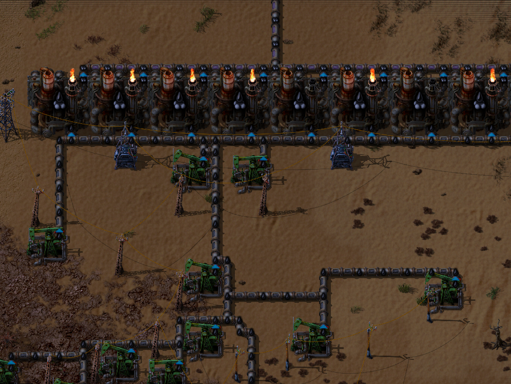
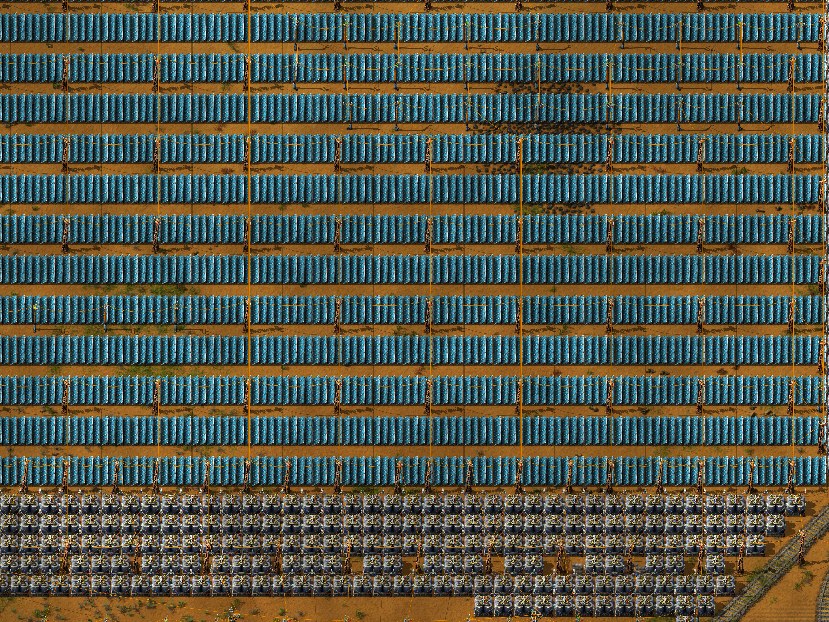
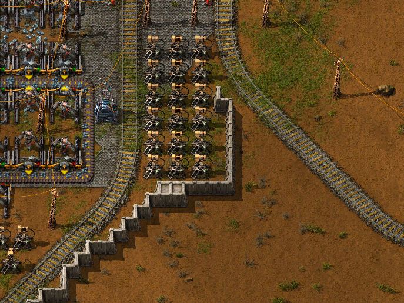
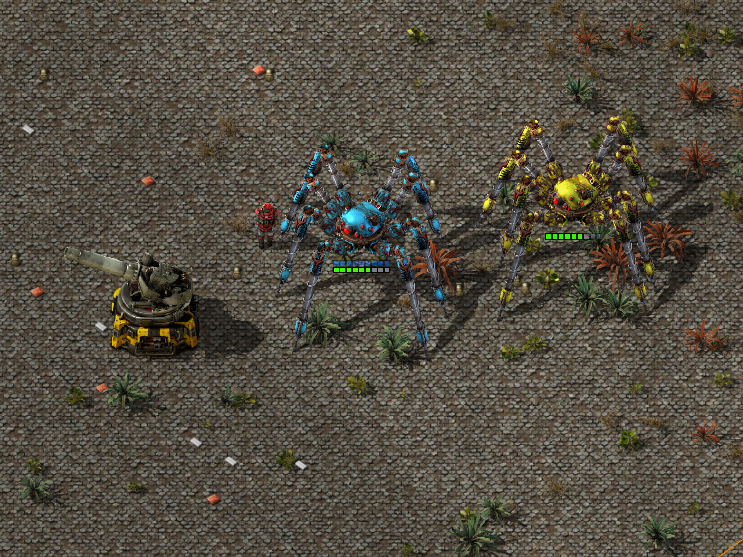

3 Эпоха (Химия и Экология)
Часть 1 (производство)
На данном моменте развития вы уже сможете делать нефтеперерабатывающие заводы что позволит вам расширить возможности атаки и обороны. На данном этапе уходим в экологичное производство, чтобы не давать кусакам дополнительные шансы на эволюцию. Делаем большое количество солнечных панелей и кучу аккумуляторов к ним, в соответствии с затратами электричества, для избегания просадки тока в сети. В свою очередь это даст вашей базе меньший радиус загрязнений и вам можно меньше ездить и уничтожать гнезда.

Завод нефти

Солнечные панели с аккумуляторными блоками
Часть 2 (Оборона)
Переходим на более топовые технологии защиты, в зависимости от степени их изучения. Рекомендуем к защите базы лазерные турели боеприпасы будут всегда под рукой, ибо электричество и есть боеприпасы и вам не нужно будет придумывать сложную логистику, чтобы заряжать турели.

Пример защиты
Часть 3 (Атака)
В третью эпоху стоит бросить все силы на изучение новых технологий военной промышленности, а именно гаубиц и паукотрона.
